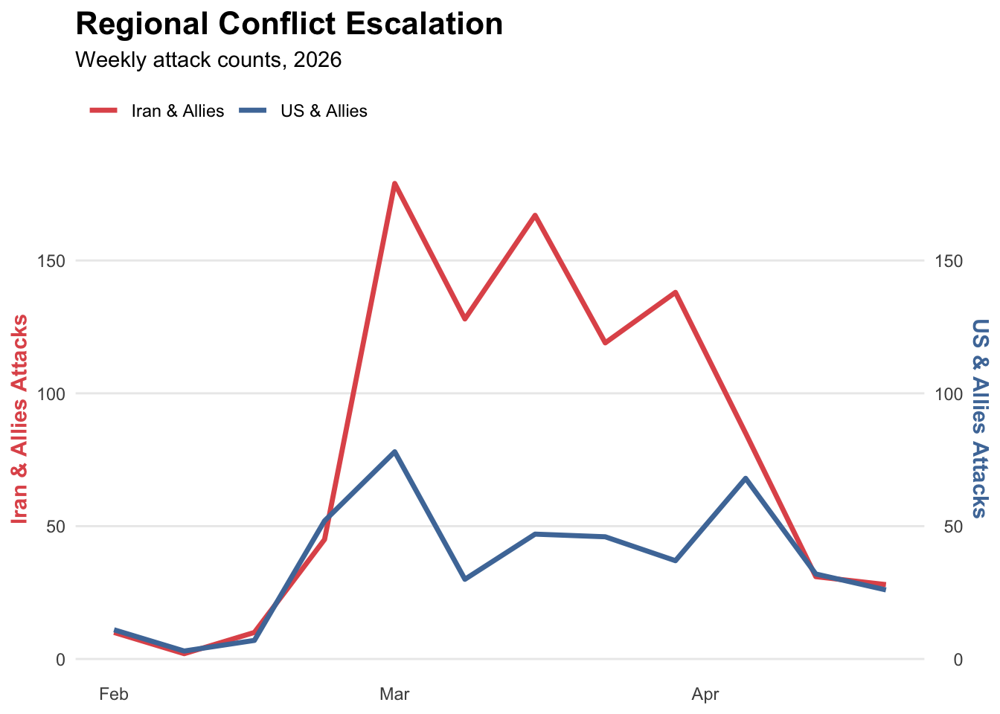
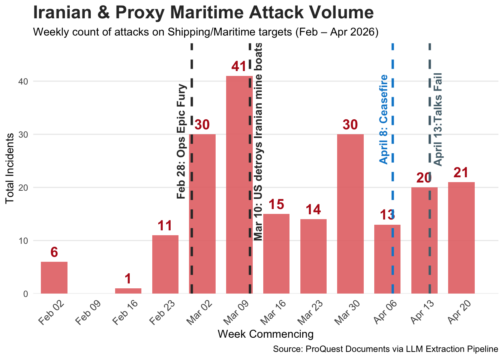
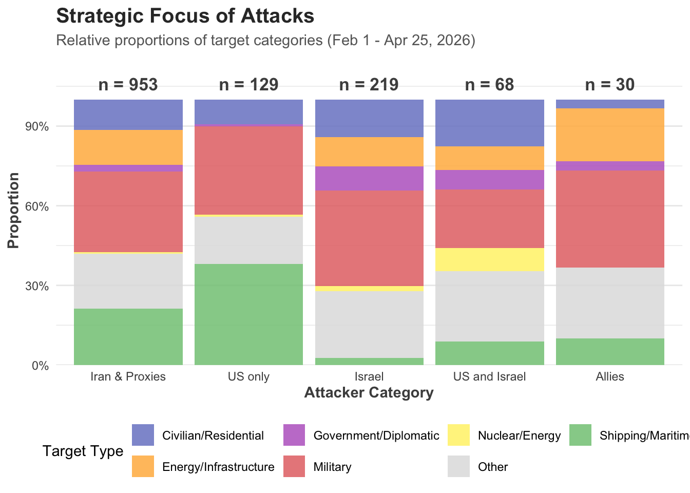
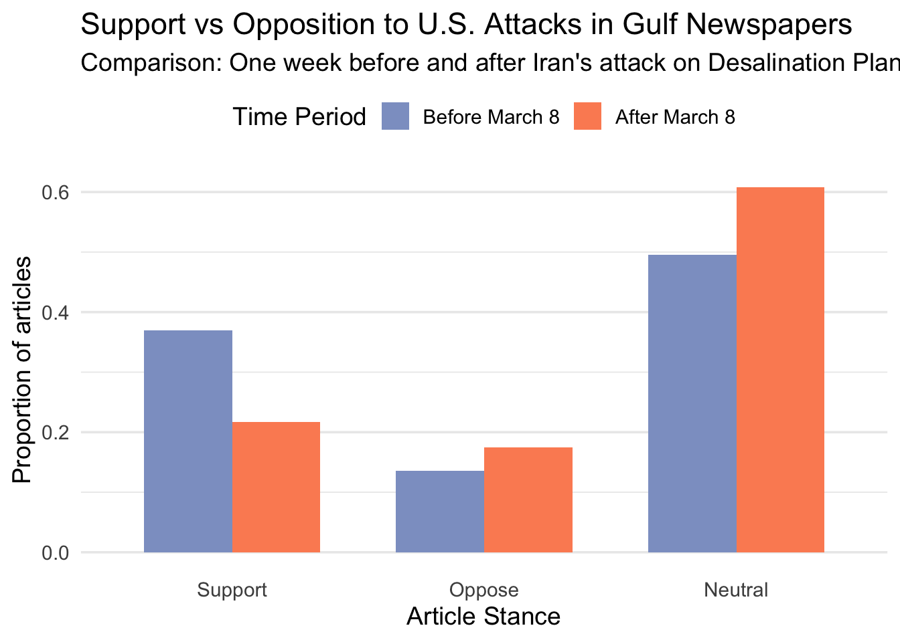

Intro
The current crisis in Iran, initiated by Operation Epic Fury on February 28, 2026, marked a paradigm shift in Persian Gulf security. What began as a decapitation strike against the Iranian leadership has evolved into a protracted multi-domain conflict, defying initial projections of a rapid resolution. The military and economic costs of war have been felt not only by the countries engaged in the conflict but also around the globe, as oil prices have continued to soar and commercial traffic through the Strait of Hormuz has trickled to a halt. As a result, the war has drawn the attention of conflict analysts, economists, and the public, and media coverage remains saturated. Still, a critical gap persists between receiving everyday information and our understanding of strategic patterns as we seek to connect the dynamic dots. This exploratory analysis bridges that gap, utilizing an LLM-driven data pipeline to quantify the evolving ‘tit-for-tat’ dynamic between U.S. enforcement and Iranian asymmetric responses.
This exploratory analysis bridges that gap, utilizing an LLM-driven data pipeline to quantify the evolving “tit-for-tat” dynamic between U.S. enforcement and Iranian asymmetric responses.
Data Acquisition and Pre-processing
A comprehensive corpus of 6,661 news articles was systematically harvested from global outlets between February 1 and April 28, 2026. This dataset captures the evolution of the Iran crisis across diverse geographical and political perspectives. To transform unstructured text into structured data, a bespoke computational pipeline was developed in Python, leveraging the Gemini 3.0 Large Language Model (LLM). The extraction logic was programmed to identify and categorize conflict events across three primary kinetic domains: air, land, and sea. To maintain a strict focus on kinetic warfare, non-physical engagements, such as cyberattacks, were identified but subsequently excluded from the final analysis. This ensured the resulting dataset remained a high-fidelity representation of tangible military escalations.
Data Validation and Quality Assurance
The extraction pipeline identified 1,846 unique kinetic observations. It is important to clarify that this dataset represents the conflict as filtered through global media coverage. If ten air raids occurred but only two were prominently reported, our data reflects the two visible events that reached the public domain.
The dataset exhibits high internal validity, with a mean confidence score of 0.95. The rigorous nature of the filtering process is evidenced by the fact that even the lowest-scoring entries represent reports with substantial documentation. For instance, on April 8, Iranian outlets alleged UAE involvement in an attack on the Lavan Island oil facility. Because this remained a high-stakes, single-source claim, the pipeline assigned it a confidence score of 0.70, which represents one of the lowest scores in the dataset.
Event Conflict Escalation after February
The conflict began on February 28 with an abrupt escalation. While the US and Israel initially launched the attacks, Iran soon retaliated. Iran’s response first consisted of aerial attacks on Israel and US bases. However, the scope soon expanded to other Gulf countries, prompting a GCC retaliation that broadened the list of US allies involved. Iranian proxies, including the Houthis and Hezbollah, also responded by attacking Israel and the Red Sea corridor, though these proxy operations remained on a much smaller scale.
Maritime Attacks: The new Center of Gravity
The conflict escalation experienced distinct ebbs and flows, but a strategic shift occurred when Iran began focusing on maritime targets in the Strait of Hormuz. Following Iran’s declaration to close the Strait on March 5, Brent oil prices surged from $60 per barrel in January to $99 by March 9 (Source).
This period marked the peak of Iranian maritime operations. In response, the U.S. shifted its focus to the corridor, reporting the destruction of 16 Iranian mine-laying vessels on March 10. Following this engagement, Iranian maritime attacks decreased by more than half over the next two weeks, though they did not cease entirely.

Target Evolution and Asymmetric Reciprocity
The geography of the conflict spanned all domains: air, sea, and land. While Iran’s retaliation was geographically widespread, the expansion of target selection followed a distinct tit-for-tat cycle. This pattern became particularly evident in the energy sector during mid-March. Following an Israeli airstrike on Iranian oil facilities in Tehran and Alborz, Iran responded by striking fuel tankers in Bahrain, the Shaybah Oil Field in Saudi Arabia, and the Haifa Oil Refinery in Israel.
A similar logic governed attacks on critical infrastructure. After an Israeli strike on the water supply in Qeshm Island on March 7, Iran launched a retaliatory drone strike on a desalination plant in Bahrain the following day. This rapid cycle of targeting desalination plants and energy hubs suggests that the strategic objective shifted from military targets to the fundamental economic and survival infrastructure of the region.

The Strategic Sentiment Pivot
There has been significant debate regarding the initial stance of the Gulf Cooperation Council (GCC) nations, which appeared to tacitly approve of the early U.S.-led operations against Iran. However, the expectation that Iran would succumb to these strikes, potentially leading to regime change, proved overambitious. Iran’s resilience and subsequent retaliatory capacity shifted the regional outlook from optimistic to ominous.
As the conflict progressed, the intensity of the Israeli offensive drove a corresponding escalation from Tehran. Iran began targeting the specific vulnerabilities of GCC countries, primarily their oil refineries and water desalination infrastructure. To quantify this shift in regional sentiment, I conducted a sentiment analysis across Gulf news outlets. I compared media sentiment from the week prior to the desalination plant attacks to the week following the March 8 escalation to measure the impact of these kinetic events on regional stability and public alignment.
As expected, the data in the figure below suggests that regional support for U.S. operations declined as the impact of Iranian retaliatory strikes intensified.

Strategic Policy Implications
This analysis connects the disparate dots of the 2026 crisis, transforming 6,661 unstructured reports into a coherent understanding of the conflict’s evolution. Beyond the data extraction, several critical lessons emerge for regional policy and maritime security.
As the data suggests, regional support for U.S. operations declined as the impact of Iranian retaliatory strikes intensified. This shift reveals a fundamental vulnerability in the “deterrence-by-proxy” model. When conflict targets move from military assets to the fundamental life-support systems of the region—specifically water and energy—the political cost of alignment with the U.S. and Israel becomes prohibitively high for GCC members.
The policy implications are twofold:
First, security cooperation must move beyond traditional missile defense and toward the hardening of “survival infrastructure.” If the maritime domain is the new center of gravity, then desalination plants and refineries are the new front lines.
Second, the rapid pivot in media sentiment highlights the limits of initial political approval. Future interventions must account for the “Resilience Factor.” If an adversary can withstand initial kinetic shocks and successfully target regional vulnerabilities, the coalition of support is likely to fragment. Policymakers must recognize that in the modern Middle East, trade security is political security; once the former is compromised, the latter inevitably follows.